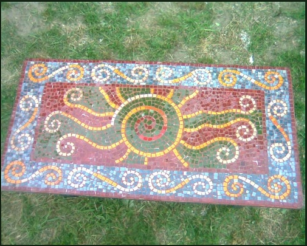
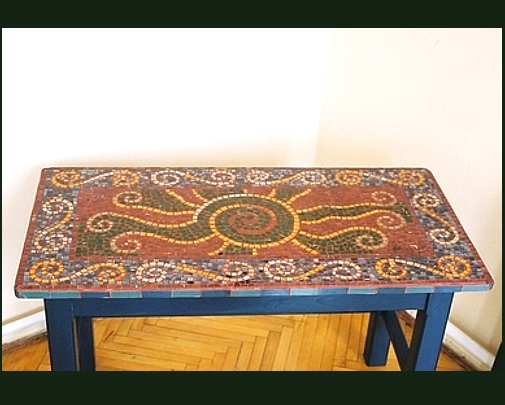
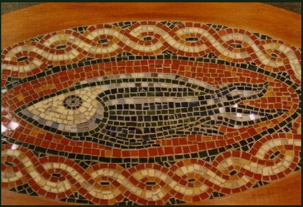
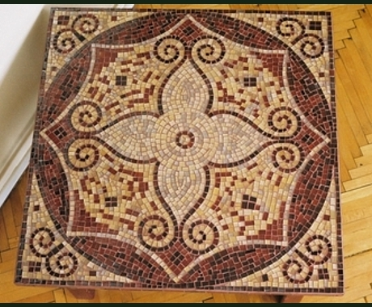
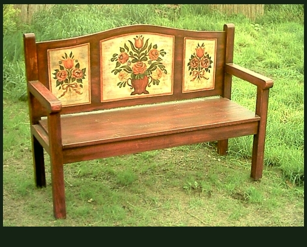
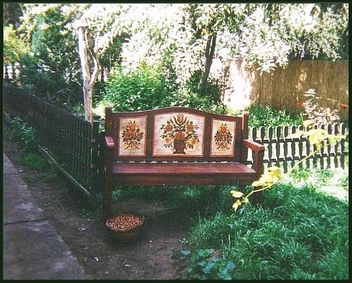

Üvegmozaik asztal
Asztallap méretei: Szélesség:50cm, Hosszúság:100cm, Magasság:60cm

Üvegmozaik asztal
2.kép

Üvegmozaik asztal
3.kép
Mozaikberakásos asztal
Asztallap méretei: Szélesség:50cm, Hosszúság:70cm, Magasság:60cm

Mozaikberakásos asztal
2.kép
Üvegmozaik dohányzóasztal
Asztallap méretei: Szélesség:80cm, Hosszúság:80cm, Magasság:51cm

Üvegmozaik dohányzóasztal
2.kép
Virgámintás kerti pad
Szélesség:50cm, Hosszúság: 141cm, Mélysége:52cm; Legmagasabb pontján a
magasság: 60cm Ülés magasság: 45 cm.

Virgámintás kerti pad
Kizárólag kézzel készített, vadonatúj antikolt fenyőbútor, virgámintás
festéssel. Kinti és benti használatra is. Akár étkező garnitúrára is
kiegészíthető! Ha van régi bútorod és szeretnél ilyet, az is megoldható.

Virágmintás kerti pad
3.kép
Tulipános láda tükörrel
Kizárólag kézzel készült, antikolt, tulipán-mintás bútor, a hozzá illő
tükörrel! Méretei: Szélesség:65cm Magasság:125cm
Üvegpolcok
Antik kollekciók
Egyedi antik konyhabútor
Egyedi konyhabútor. Felújítva, majd vissza antikolva, a régies hatás miatt!